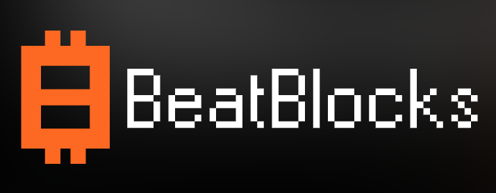

25 Exclusive Drum Loops Inscribed as Bitcoin Ordinals using Audional Protocol. High-quality, chain-verified beats from the former live drummer of The Prodigy.
120 BPM
Lo-fi
128 BPM
Driving techno rhythm
160 BPM
Classic jungle vibes
90 BPM
Chill, head-nodding beat
Full library available soon!
Full library available soon!
Full library available soon!
Full library available soon!

The complete Kieron Pepper Drum Loop library will debut on the BeatBlocks marketplace – the premier platform for on-chain music assets. Connect your Bitcoin wallet compatible with Ordinals, browse the collection, and securely purchase and inscribe your chosen loops with just a few clicks.
Stay updated on the Kieron Pepper collection launch, future BAM releases, AMAs, and connect with fellow creators. Follow Audionals for the latest news.